🌠🌎 Afuera del Planeta 🌍🌠
🎵0:40 ➖➖⏮︎ ▶︎ ⏭︎➖➖ 1:10🎵
Recuerdo el día en el que te besé. Yo estaba loco, pero tú también. Todo brillaba, tus ojos, tu pelo. Todo se caía a mi alrededor y no sabía que hacer
No sabía si besarte o salir a correr Y me tomaste de la mano, para siempre
Y ahora sé cuál fue la fuerza que me ató a ti. Corramos juntos, vámonos de aquí. A donde tú quieras
Afuera del Planeta" siempre será una canción muy especial para mí porque desde que la escuchamos juntos sentí que tenía algo que nos representaba. Pero se volvió aún más importante el día que me escribiste en una carta la parte que va del 0:40 al 1:10, porque cada vez que la escucho me transporta a aquel momento en que nos dimos nuestro primer beso. Esas palabras describen perfectamente lo que sentí ese día: los nervios, la emoción y la sensación de que todo a mi alrededor desaparecía para que solo existiéramos tú y yo. Por eso esta canción no es solo una canción para mí, es un recuerdo de nosotros, de cómo comenzó nuestra historia y de uno de los momentos más bonitos de mi vida.
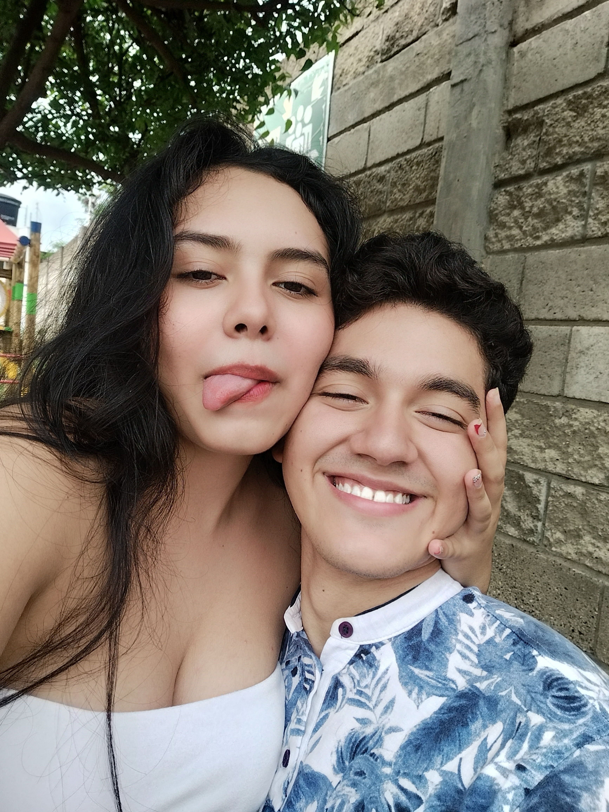
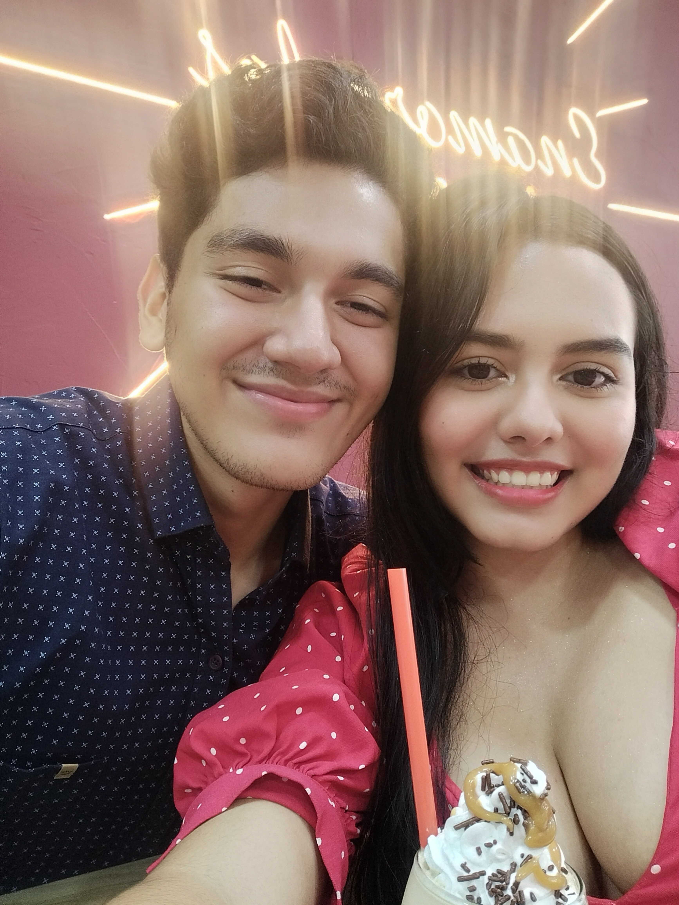
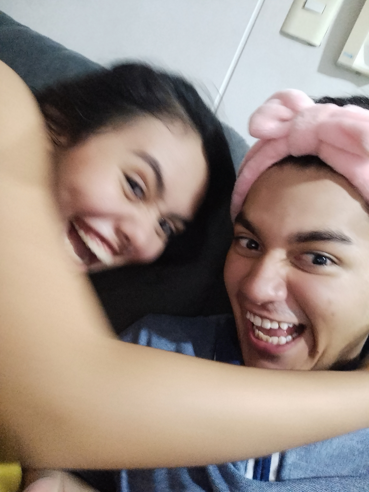
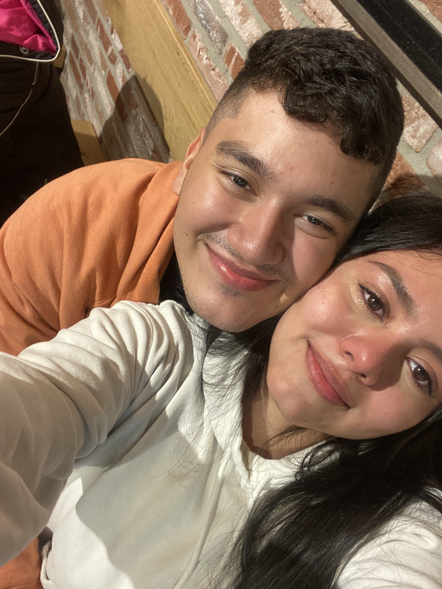
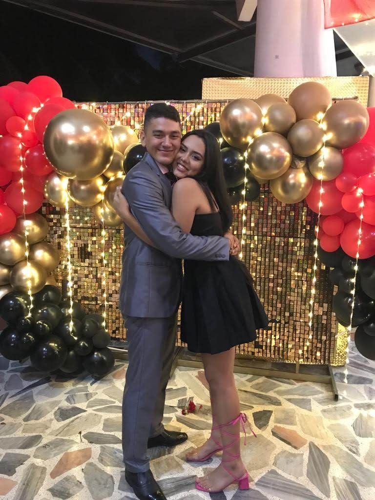
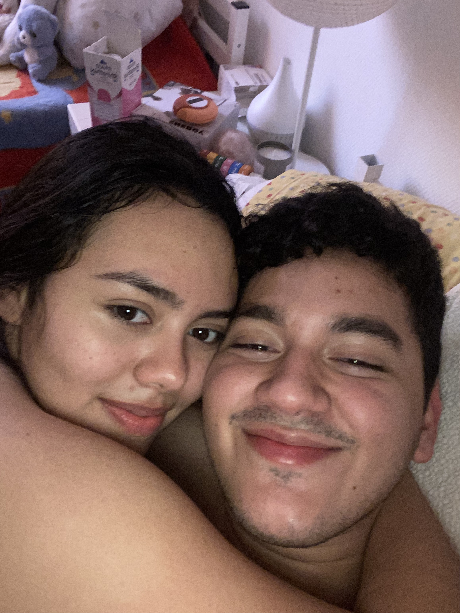

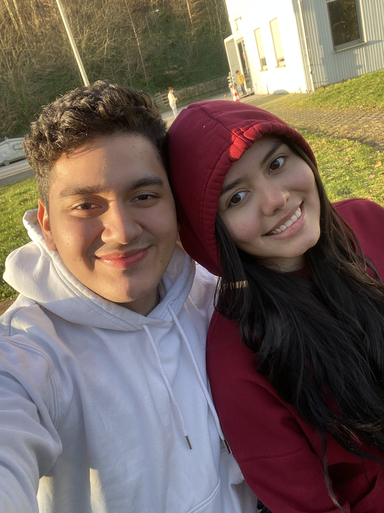
2022
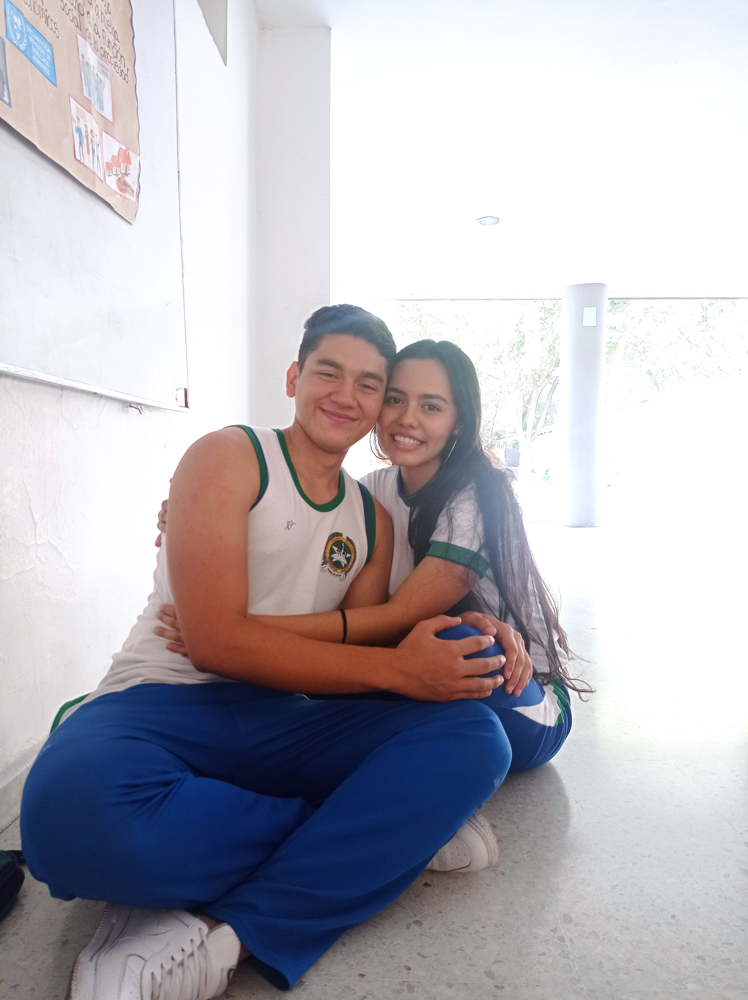
El año en el inicio nuestra historia.
En el año 2022 comenzó nuestra historia como pareja. Recuerdo muy bien aquella noche en el cumpleaños de Laura: yo no tenía muchas ganas de ir, estaba desanimado, pero desde el momento en que llegaste y te sentaste a mi lado, cambió por completo mi noche. Te quedaste conmigo todo el tiempo, y aún recuerdo cuando te invité a bailar y dijiste que sí. Esa noche despertó algo muy especial en mí. Te veías muy linda, y solo bailé contigo. También fue la noche de nuestro primer beso, un momento que nunca voy a olvidar, porque sentí como si todo a nuestro alrededor desapareciera y solo existiéramos tú y yo, flotando en nuestro propio universo.
Ese año también compartimos muchos momentos en el colegio: nos sentábamos a almorzar juntos, pasábamos los descansos acompañándonos, y poco a poco empezamos a crear momentos juntos. Recuerdo lo hermosa que te veías con la jardinera, tan alta, con esa mirada tierna y tu sonrisa perfecta; eras la más bella del colegio. También te veía con el uniforme de educación física y tus dos trencitas, me encanta como te quedaban las dos trencitas.
2023
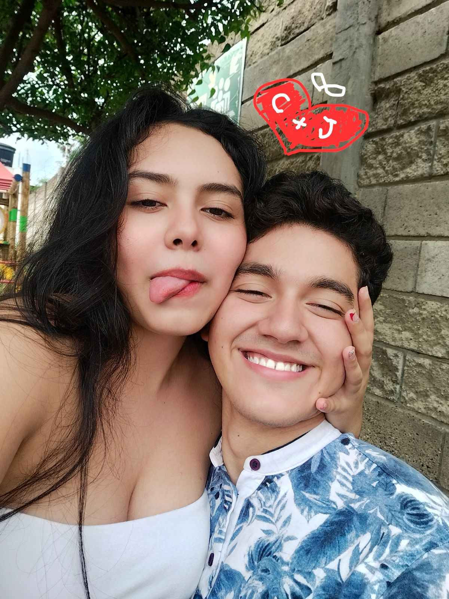
Cada día mas juntos.
El año 2023 ha sido el año en el que más tiempo hemos compartido juntos. Nos veíamos casi todos los días de la semana, y aunque a veces no tenía dinero para pagar un InDriver, madrugaba y me iba caminando desde mi casa hasta la tuya. En esos recorridos, mi motivación siempre eras tú, saber que al llegar me ibas a estar esperando con esa sonrisa que me hacía olvidar todo el cansancio.
Compartimos muchísimos momentos hermosos, desde desayunos, almuerzos y cenas que tú preparabas con tanto amor y que siempre te quedaban deliciosos, hasta noches en las que yo compraba cosas para cocinar juntos, haciendo de la cocina de tu casa un lugar muy especial para nosotros. También pasábamos los días entre risas, yo trabajando desde tu casa y tú acompañándome, siempre recibiéndome con cariño y haciéndome sentir en casa. Todo eso hizo que nuestro 2023 fuera muy importante, porque fortaleció lo nuestro en la vida cotidiana, en lo simple y en lo real, y me ayudó a entender que contigo no solo comparto momentos felices, sino una conexión tranquila, natural y verdadera.
2024
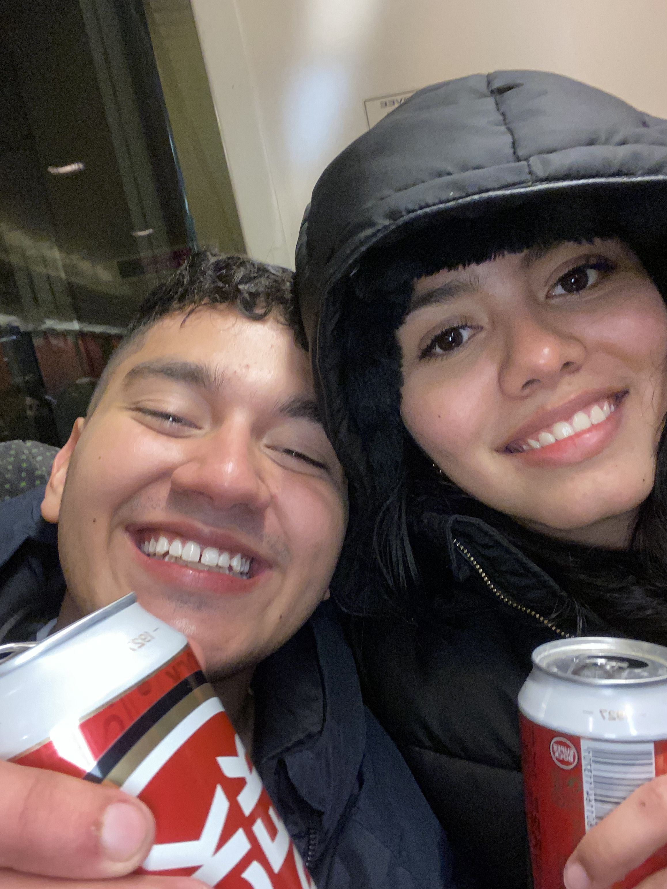
El año de la locura y el amor.
El año 2024 fue un año en el que pasó de todo. Tú ya no estabas en Colombia, estabas al otro lado del mundo, pero a pesar de la distancia seguimos hablándonos todos los días. Tú me decías que fuera a vivir contigo, y aunque al principio no lo veía posible, con el tiempo me di cuenta de que te amaba más de lo que yo mismo imaginaba, y empecé a soñar seriamente con la idea de ir a tu lado.
Vivimos una relación a distancia llena de esfuerzo y paciencia, con muchas noches esperando a que despertaras para poder llamarte y compartir contigo aunque fuera un momento. Repetíamos siempre “un día más es un día menos para vernos”, y esa frase nos mantenía firmes. Ese año también dejé muchas cosas atrás y me enfoqué en ese sueño de poder estar contigo, porque para mí lo más importante eras tú.
Y el día en que nos volvimos a ver después de un año y una semana fue simplemente inolvidable. Tenerte de frente otra vez, poder abrazarte y besarte después de tanto tiempo es un sentimiento que todavía puedo revivir cuando lo recuerdo. Te amo mucho, Camila.
2025
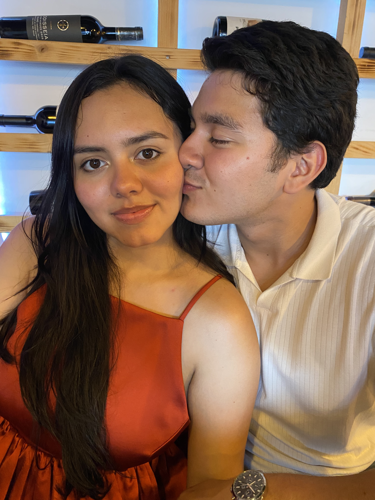
El año de la aventura en Europa y el astapronto...
En el año 2025 cumplimos la meta de estar juntos en Luxemburgo. No importaba que no viviéramos en el mismo lugar, yo madrugaba y viajaba hasta tu casa, entre infinidad de buses y trenes, solo por estar contigo. También subía hasta tu escuela en Diekirch para llevarte o recogerte después de clases, porque cada momento contigo valía completamente el esfuerzo.
Compartimos muchos recuerdos hermosos: salidas a comer hamburguesas en Burger King o McDonald’s, donde nos sentábamos en el segundo piso a hablar y a reírnos de las personas que pasaban por la calle; también ir juntos a hacer el mercado de tu casa y vivir momentos simples que se sentían muy especiales. Uno de los más lindos fue el picnic que preparaste para celebrar nuestros 2 años y medio de relación, un detalle que nunca voy a olvidar.
2026...✒️
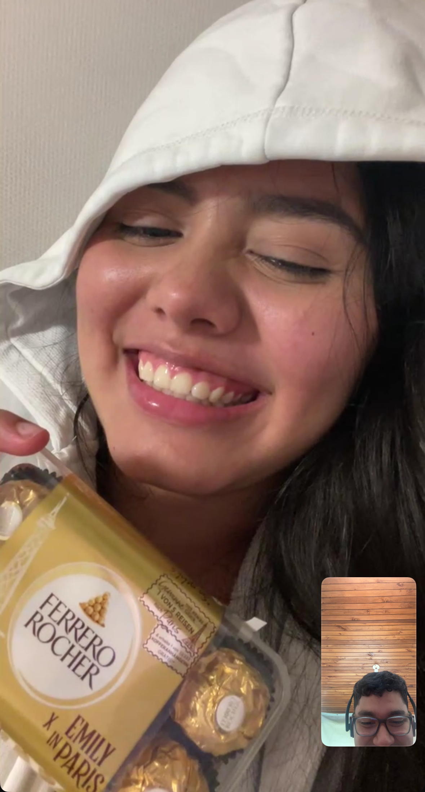
A pesar de todo lo que hemos vivido desde 2022 hasta hoy, de la distancia, de los cambios y de cada etapa que nos ha puesto a prueba, hay algo que siempre ha permanecido igual: lo que siento por ti. Hemos pasado momentos hermosos, otros difíciles, pero en todos ellos has sido una parte importante de mi vida, y eso no va a cambiar. Hoy en tu cumpleaños solo quiero recordarte lo especial que eres para mí. No importa lo que pase, siempre voy a estar para ti, para apoyarte, escucharte y acompañarte, como lo he intentado hacer en cada etapa de nuestra historia. Nuestro camino ha sido único, y aunque a veces no ha sido fácil, contigo he aprendido lo que significa amar de verdad. Feliz cumpleaños, Camila. Te deseo lo mejor hoy y siempre, y espero que la vida te regale todo lo bonito que mereces. Y aunque el tiempo o la distancia cambien cosas, en mí siempre vas a tener a alguien que te quiere de verdad y que siempre va a estar para ti.